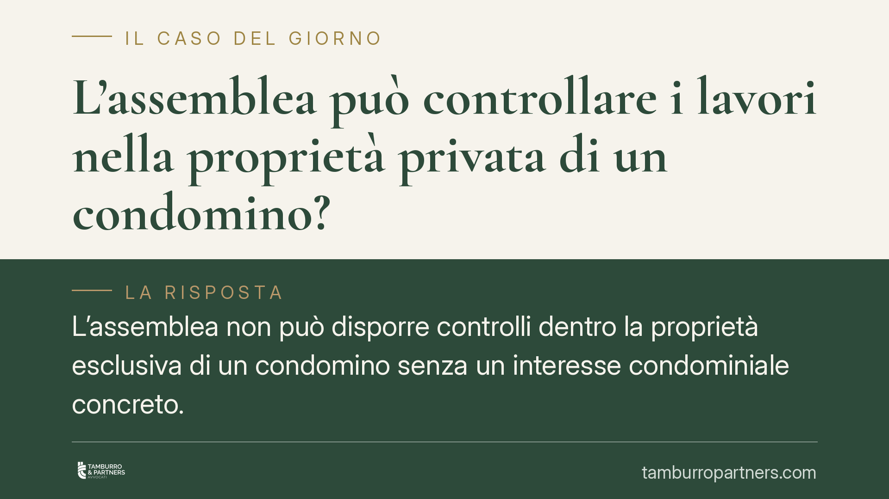

L'assemblea può controllare i lavori nella proprietà privata di un condomino?
L'assemblea non può disporre controlli dentro la proprietà esclusiva di un condomino senza un interesse condominiale concreto. Una recente pronuncia del Tribunale di Napoli lo ribadisce, muovendo dal diritto del proprietario di escludere terzi. Vediamo cosa dice la norma, quando la delibera è invalida e, soprattutto, come muoversi in concreto.

Il caso
Un'assemblea condominiale incarica un tecnico di verificare la legittimità urbanistica di alcune opere realizzate all'interno dell'appartamento di un condomino. La delibera non indica, però, un interesse condominiale concreto: non si lamenta un danno alle parti comuni, né un rischio per la stabilità dell'edificio o per la sicurezza. Il condomino impugna.
Il Tribunale di Napoli (VI sez. civile, sent. n. 6594/2025) ha ritenuto invalida la delibera, osservando che l'assemblea aveva ecceduto i propri poteri, invadendo la sfera della proprietà esclusiva senza una ragione di tutela riconducibile al condominio.
Inquadramento normativo
Il punto di partenza è l'art. 832 cod. civ., che riconosce al proprietario il diritto di godere e disporre della cosa in modo pieno ed esclusivo. Da qui discende il cosiddetto *ius excludendi alios*, cioè il potere di impedire a chiunque l'ingresso e l'ingerenza nel bene. Un controllo tecnico disposto dall'assemblea sull'interno di un'unità privata incide direttamente su questo diritto.
Le attribuzioni dell'assemblea sono tipizzate dall'art. 1135 cod. civ. e riguardano la gestione delle parti comuni, non il sindacato sulla regolarità urbanistica delle proprietà esclusive. Quest'ultima attiene al rapporto tra il singolo e la pubblica amministrazione, non al condominio. Verifica urbanistica e tutela delle parti comuni restano piani distinti: l'assemblea può attivarsi solo se, e nei limiti in cui, le opere del singolo pregiudicano i beni comuni.
Quanto al regime di invalidità, occorre muoversi con prudenza. Secondo Cass., Sez. Un., n. 9839/2021, sono nulle le delibere che incidono su diritti individuali o reali dei condomini (è il caso della compressione della proprietà esclusiva), mentre sono annullabili – ai sensi dell'art. 1137 cod. civ., con impugnazione nel termine di trenta giorni – le delibere viziate, tra l'altro, da eccesso di potere assembleare. La qualificazione concreta dipende dunque dal vizio effettivamente ravvisato: se la delibera comprime un diritto reale del condomino, è plausibile l'inquadramento nella nullità; se si contesta un uso distorto del potere dell'assemblea nei limiti delle sue competenze, prevale l'annullabilità. La distinzione non è teorica: cambia il termine e il tipo di azione.
Implicazioni pratiche
Per il condomino, la pronuncia conferma che l'interno della propria unità non è soggetto a ispezioni disposte a maggioranza senza un interesse comune apprezzabile.
Per l'amministratore e per l'assemblea, il messaggio è altrettanto netto: prima di deliberare un controllo che tocca la proprietà esclusiva occorre individuare e verbalizzare la ragione condominiale (ad esempio un'infiltrazione proveniente dall'unità, un carico sulle strutture portanti, un intervento su impianti comuni).
Il nodo più delicato resta il regime di impugnazione. Poiché la linea di confine tra nullità e annullabilità dipende dalla natura del vizio, è rischioso dare per scontata l'imprescrittibilità dell'impugnazione: in caso di annullabilità, il decorso dei trenta giorni dall'art. 1137 cod. civ. consolida la delibera. Di fronte a una delibera di questo tipo è quindi opportuno un esame tecnico-giuridico tempestivo, senza attendere il maturare del termine.
Cosa fare in concreto
- Leggere il verbale e individuare la ragione condominiale: verificare se la delibera indichi un interesse comune concreto o si limiti a disporre un controllo sull'interno dell'unità privata.
- Qualificare il vizio: stabilire se la delibera comprime un diritto reale (ipotesi di nullità) o costituisce esercizio distorto delle competenze assembleari (ipotesi di annullabilità, con termine di 30 giorni ex art. 1137 cod. civ.).
- Agire nei tempi: in via cautelativa, impostare l'impugnazione come se operasse il termine dei trenta giorni, per non esporsi al consolidamento della delibera.
- Separare i piani: ricordare che la regolarità urbanistica riguarda il rapporto con la pubblica amministrazione; il condominio può intervenire solo a tutela delle parti comuni.
- Documentare ogni accesso: subordinare eventuali ingressi nell'unità privata al consenso del proprietario o a un titolo idoneo, mettendo per iscritto presupposti e finalità.
Un'analisi preliminare della delibera e del vizio contestato è lo strumento più efficace per scegliere l'azione corretta ed evitare decadenze.
Disclaimer
Contributo informativo a cura di Tamburro & Partners – Avv. Giuseppe Tamburro. Non costituisce parere legale.
Ogni condominio ha una storia a sé.
Se gestisci un'amministrazione e vuoi un confronto su una specifica questione condominiale, scrivi allo studio. Ti rispondiamo entro un giorno lavorativo.